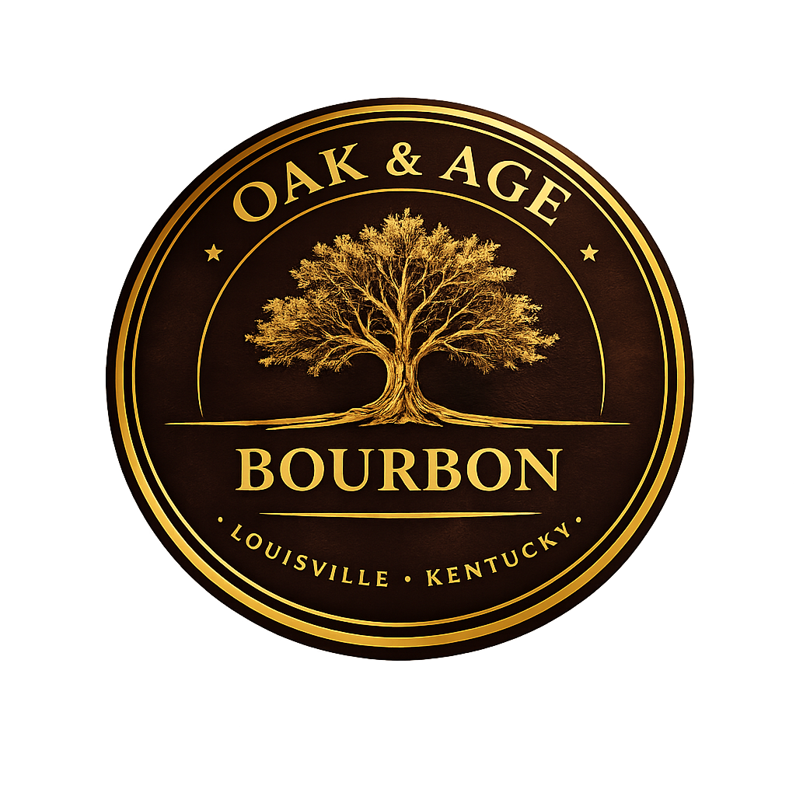
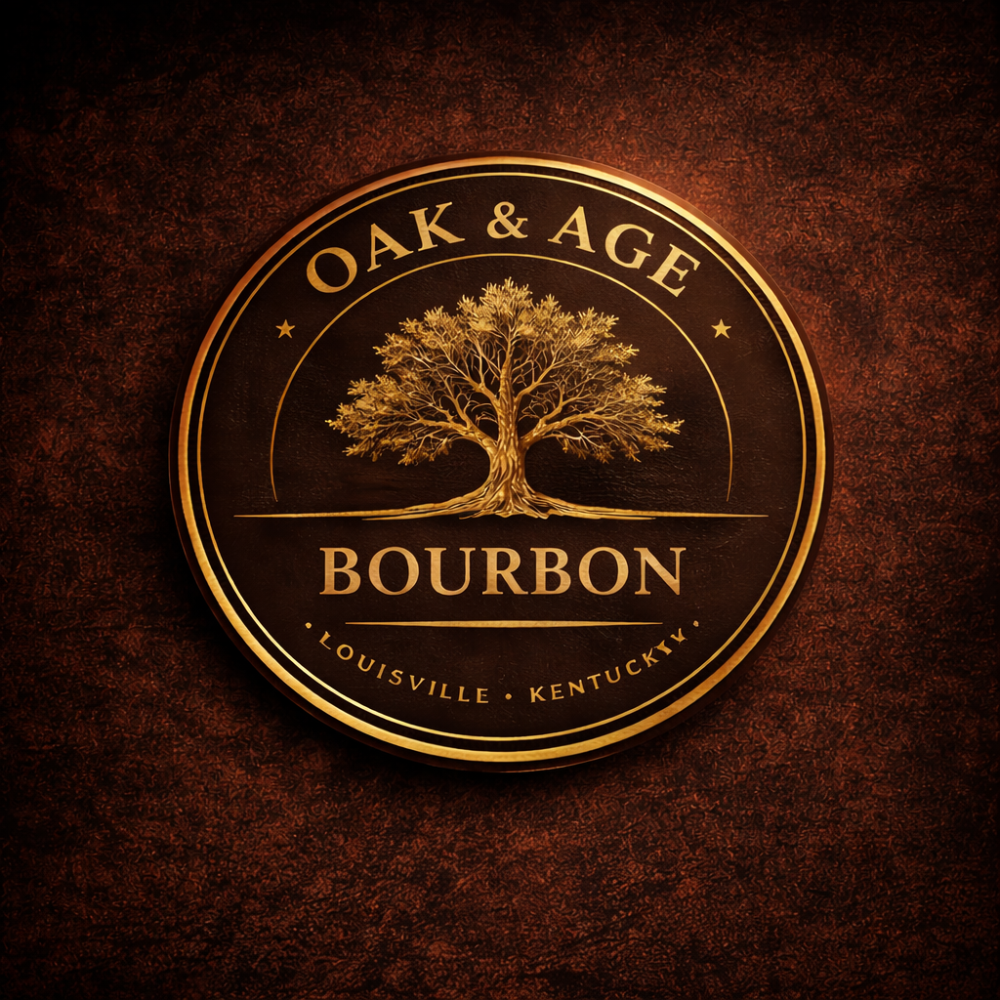
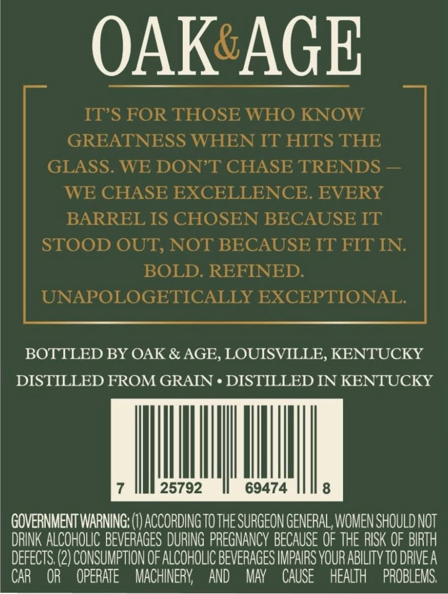

Release Role
The first barrel sets the tone. Barrel 001 establishes what Oak & Age means by character, patience, and restraint.

Born in Louisville and built with patience.
Oak & Age is bourbon for folks who know the difference between a barrel that is ready and one that still has something left to say.
The Story
Oak & Age starts with a simple Kentucky truth. Time matters. Wood matters. Judgment matters most.
Anybody can bottle bourbon. The harder thing is knowing when to wait, when to walk away, and when a barrel has finally come into its own.
That is the spirit behind Oak & Age. Built in Louisville and rooted in barrel character, this is a bourbon meant to feel honest in the glass. Steady. Mature. Worth coming back to.
As the story grows, this section can carry the deeper history of the brand, the people behind it, and the road that brought the first release to life.
Barrel 001
Folks who know bourbon know better than to rush a barrel or talk too big before the cork is pulled. Barrel 001 is Oak & Age's first answer to that old Kentucky question: is it ready, or does it still need time? This one was ready.

Barrel 001 drinks the way a first release ought to drink. Steady on the nose. Sure-footed on the tongue. No need to show off. Just oak, sweetness, warmth, and enough backbone to let you know it was chosen on purpose.
The first draw opens with caramel and toasted sugar, then settles into vanilla, charred oak, and a little Kentucky spice. There is a touch of dark fruit in the middle if you sit with it long enough, and the finish stays warm without getting rough or hurried.
This barrel was not picked to be loud. It was picked to be right. The kind of bourbon you pour slow, turn once in the glass, and come back to before the night is over.
Brand Philosophy
That is not a slogan. It is the job.
Good bourbon asks for patience. Great bourbon asks for restraint. You learn early that not every barrel is meant to carry your name, no matter how badly you want another release.
Oak & Age is built on that discipline. Choose carefully. Bottle honestly. Let the bourbon speak for itself.

Louisville Advantage
Louisville has earned its place in bourbon history the old-fashioned way. Barrel by barrel, year by year, pour by pour.
Oak & Age belongs in that conversation. Not as background scenery, but as a brand shaped by the city, its warehouses, its whiskey people, and the culture that knows a real pour when it finds one.
Over time, this page can grow into a fuller Louisville story with tastings, retail partners, hospitality placements, and the places folks can find Oak & Age for themselves.
What This Can Become
The first release matters. So does what comes after it. With the right foundation, Oak & Age can grow into a brand people follow for new barrels, local placements, tasting events, and the next bottle worth bringing home.
A proper home for releases, bottle stories, brand history, and the details people want before they buy or pour.
A stronger presence for folks searching Louisville bourbon, local pours, and where to find the next good bottle.
Release updates, tasting moments, and stories that feel like the brand, not like filler.
Better support for restaurants, bars, tastings, and the local places that help a bourbon earn its reputation.
Follow the Journey
Use this section now for Facebook. Expand it later into Instagram, email capture, release alerts, tasting announcements, and event updates as the brand matures.
First Pour
This is a small first run. If you want to know when it is ready, leave your email and we will reach out before it disappears.
Release list opening soon.